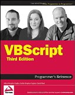
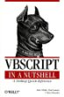
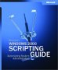
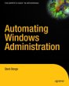

Websites
TechNet Script Centre - Microsoft scripting home
TechNet Script Center Script Repository - Sample VBS scripts
Guy Thomas - Tutorials
vbs CheatSheet - Quick reminder and reference sheet from AddedBytes.com
VBScript's Regular Expression Support
microsoft.public.scripting.wsh - a busy newsgroup regularly frequented by Microsoft staff.
The Scripting Guys Forum - a mix of VBScript, Batch and PowerShell.
VBSEdit - Sample scripts and a VB Editor
VisualBasicScript - Forum
VBScript debugger
VBScript-to-PowerShell
Windows Script Host versus MOM Scripts
Download Windows Scripting Host: Wsh57_WinXP or Wsh57_Win2003
SS64 VBS Forum
Recommended Books:
 VBScript (third edition) by Adrian Kingsley-Hughes
A comprehensive overview of VBScript technology with sample code at every stage from beginner to advanced user. General syntax, functions, keywords, style, error handling and an expanded reference section.
Advanced coverage on Active Directory Service Interfaces (ADSI), remote scripting, database scripting, and more. VBScript in a Nutshell by Paul Lomax
VBScript reference - for each statement, function, operator, and object, the book gives a quick description of the syntax, rules of its proper use and some examples. Advanced VBScript for Microsoft Windows Administrators by Don Jones
Learn advanced VBScript techniques, including Active Directory Service Interfaces (ADSI) Windows Management Instrumentation (WMI) scripting, security scripting, remote scripting, database scripting, and scripting for Group Policy. Automating Windows Administration by Stein Borge
An all round introduction to VBScript, how to script network configuration, hardware, event log, security and system information retrieval. Covers various Windows administration tasks with WMI and ADSI (Active Directory Services Interface).VBS Edit - Programming editor specifically for VB Script
VBScript Reference Manual (PDF) from Indusoft.com
“The man who doesn't read good books has no advantage over the man who can't read them” ~ Mark Twain